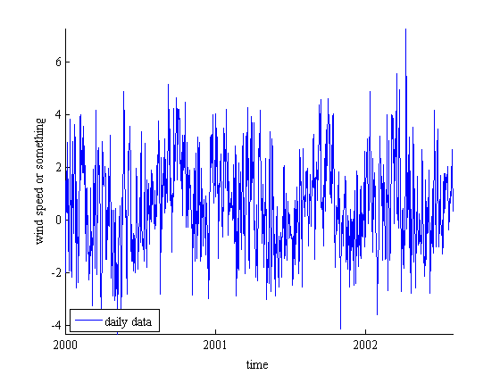
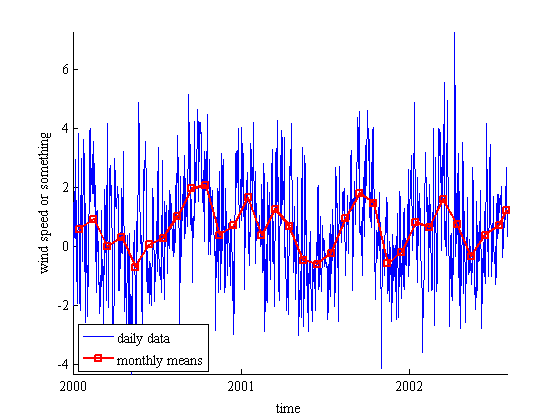
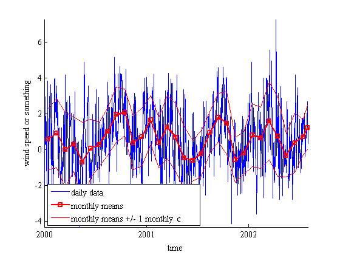
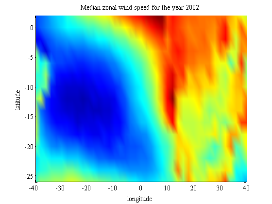

downsample_ts documentation
This function downsamples 1D or 3D data to monthly, yearly, hourly, minutely, or secondly data. This function was originally designed to create monthly mean time series from daily geospatial climate data.
Contents
Syntax
Z_downsamp = downsample_ts(Z,t) Z_downsamp = downsample_ts(...,'DownsamplingPeriod') Z_downsamp = downsample_ts(...,'function') [Z_downsamp,t_downsamp] = downsample_ts(...)
Description
Z_downsamp = downsample_ts(Z,t) downsamples Z, which must be provided with a corresponding time vector t. Z can be 1D if its length matches the length of t. If Z is three-dimensional, the length of its third dimension must match the length of t. For geospatial climate data arrays, dimensions of Z might correspond to lat x lon x time or lon x lat x time.
Z_downsamp = downsample_ts(...,'DownsamplingPeriod') specifies a downsampling period as
- 'year'
- 'month' (default)
- 'day'
- 'hour'
- 'minute'
- 'second'
Z_downsamp = downsample_ts(...,'function') specifies a function to perform on the data. By default, monthly averages are taken, but you may wish to return the monthly median or monthly standard deviation or any of the functions listed below.
A note on functions which ignore NaNs: To get the monthly means of data while ignoring NaN values, you can use the 'nanmean' option. The nanmean function is part of the Statistics Toolbox, but may also be found as part of the NaN Suite on File Exchange. However, the File Exchange versions mix up the order of dimensions and flags for nanstd, nanvar, nanmin, and nanmax, so you will need the Statistics Toolbox for those particular functions. In all, the following functions are available:
- 'mean' (default)
- 'nanmean' ignores NaN values in Z. Requires Statistics toolbox or NaN Suite.
- 'median'
- 'nanmedian' ignores NaN values in Z. Requires Statistics toolbox or NaN Suite.
- 'min'
- 'nanmin' ignores NaN values in Z. Requires Statistics toolbox.
- 'max'
- 'nanmax' ignores NaN values in Z. Requires Statistics toolbox.
- 'std' standard deviation.
- 'nanstd' ignores NaN values in Z. Requires Statistics toolbox.
- 'var' variance.
- 'nanvar' ignores NaN values in Z. Requires Statistics toolbox.
- 'mode'
- 'sum'
- 'nansum'. Requires Statistics Toolbox or NaN Suite.
[Z_downsamp,t_downsamp] = downsample_ts(...) also returns a time array corresponding to Z_downsamp. If Z is 3D or, t_downsamp corresponds to the third dimension of Z_downsamp. Each value in t_downsamp represents the mean time of all data contributing to that slice of Z_downsamp.
Example 1: A 1D time series
First load the sample data included in this File Exchange submission:
load downsample_ts_exampledata
whos
Name Size Bytes Class Attributes lat 15x41 4920 double lon 15x41 4920 double t_daily 1x945 7560 double u 15x41x945 4649400 double
We see in our workspace that we've just loaded a 3D variable called u, which could represent temperature data, precipitation, wind speed, or what-have-you. For this example let's say u is a gridded wind speed data set whose dimensions correspond to latitude, longitude, and time, respectively. The t_daily array indicates that each slice along dimension 3 of u corresponds to a daily wind field on the grid given by lat and lon.
For starters, let's look at a single point on the globe, at the intersection of the equator and the prime meridian. (We'll call it Earth's Origin.) In our data set, (0°N,0°E) corresponds to row 2, column 21.
uo = squeeze(u(2,21,:));
We can plot the daily time series of wind at Earth's Origin like this:
plot(t_daily,uo,'b-') xlabel('time') ylabel('wind speed or something') box off datetick axis tight; hold on legend('daily data','location','southwest')
The daily time series of wind at Earth's Origin is a bit noisy. Let's turn the daily time series into monthly means and plot the monthly means in red. If no downsampling period is specified in downsample_ts, 'monthly' is assumed.
[uo_monthlymean,t_monthly] = downsample_ts(uo,t_daily); plot(t_monthly,uo_monthlymean,'rs-','linewidth',2) legend('daily data','monthly means','location','southwest')
To calculate the monthly standard deviation, (monthly as opposed to the standard devition of the whole time series given by std(uo)) specify 'std' as the function to perform on uo:
uo_monthly_std = downsample_ts(uo,t_daily,'std'); plot(t_monthly,uo_monthlymean + uo_monthly_std,'r') plot(t_monthly,uo_monthlymean - uo_monthly_std,'r') legend('daily data','monthly means',... 'monthly means +/- 1 monthly \sigma',... 'location','southwest')
close all; clear uo_monthly_std uo_monthlymean t_monthly uo
Example 2: A big 3D data set.
We often want to do more than look at time series at a single point on the Earth. If you have some data (perhaps wind data loaded from a NetCDF file), you might want to turn a giant 3D data set into a downsampled 3D data set. To get annual median values of the 3D u variable we loaded above, simply type
[u_yr_med,t_yr] = downsample_ts(u,t_daily,'year','median');
The time array t_yr is composed of date numbers corresponding to the data about which contributing data are centered. Let's take a look:
datestr(t_yr)
ans = 01-Jul-2000 12:00:00 02-Jul-2001 00:00:00 17-Apr-2002 12:00:00
Note that the data set does not cover the entire year 2002, so data for that year are centered about April 17.
If you'd like an array of only the years corresponding to these data, use the datevec function
[years,~,~] = datevec(t_yr)
years =
2000 2001 2002
If you'd like to animate the median fields we computed above, you can do so like this:
for loops = 1:5 % loop it 5 times for k = 1:3 % because we have 3 annual median fields h = pcolor(lon,lat,squeeze(u_yr_med(:,:,k))); shading interp caxis([-7 3]) xlabel('longitude') ylabel('latitude') title(['Median zonal wind speed for the year ',num2str(years(k))]) pause(.5) end end
Author Info
This function was written by Chad A. Greene of the University of Texas Institute for Geophysics (UTIG), fall 2014. Updated December 30, 2014 to include sum and nansum capability.